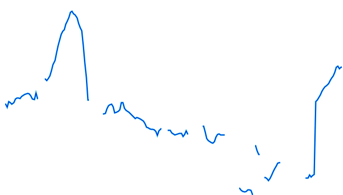

Joshua Elliott
1-19-13
Software Intonation Detection
Technological advances are being made every day in speech processing. For example, just last year Microsoft unveiled a demo of their new translation software that can translate from English into Chinese in real time, and in your own voice[1]. At this point, replicating Microsoft’s success would take an enormous amount of processing power, very complicated algorithms, and probably an entire team of software engineers to work on it for a few years. But what if we just look at one small piece of that process? If we break down everything that is involved in speech processing, we should be able to reproduce some small part of it relatively easily. This is the same principle that drives developing any large software project, as well as any type of engineering project: break the problem down into smaller and smaller pieces until you can start to solve them. My initial goal was to try to detect emotion in a speaker’s voice, but I quickly realized that would be too ambitious for this project. I settled on trying to categorize the type of sentence (declarative, question, etc.) in a recorded voice. The question I wanted to answer was whether or not this could be done with fairly simple software; and if so, what the best way to do it would be.
Surprisingly, one of the most difficult parts of any acoustic analysis is just finding the important frequencies. Working on this project has given me a new appreciation for software like Praat, for which frequency detection is just the very beginning. Much research has been done in this area[2], but is outside the scope of this project (and probably outside the scope of linguistics, being more safely within the realm of computer science and digital signal processing). With this in mind, I started out trying to use a simple algorithm for pitch detection, and then using that data for detecting intonation patterns. However, it turned out that such a simple algorithm was not capable of producing enough useable data. There are a few salient reasons for this, and probably quite a few less obvious ones. One problem is the error inherent in any recording medium; it is not 100% representative of the source sound. You have background noise, low sensitivity recording devices, and some error margin in the software as well. The other reason is that human speech is a very imprecise thing. Even after you account for imperfections in a person’s voice, you have to deal with the complexities of the sounds themselves. For example, you aren’t going to have any detectable pitch during a stop, and you don’t have a meaningful one during a voiceless sound. And simple software can’t be expected to reliably deal with these things. So one of the first things I wanted to improve was the pitch detection. Knowing that this was far too large a task for this project, I looked for something that had already been created to do this. What I settled upon was aubio, a free software library that is “designed for the extraction of annotations from audio signals.” [3] Figure 1 shows the Praat analysis of stimulus 1 (“Today is Wednesday.”) on the left, compared to the analysis of the first draft of my software (referred to hereafter as warble) on the right.
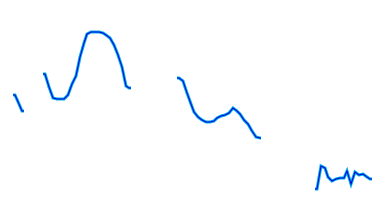 | 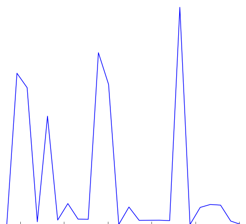 |
Figure 1 - Stimulus 1
The warble graph appears completely useless, and doesn’t seem to have any relation to the Praat analysis of the pitch. In these figures I am not including the actual frequency values because, for the purposes of this project, I am more interested in intonation patterns than actual values. However, in this case the omission is critical because the Praat graph has a vertical pitch scaled from 75 Hz to 200 Hz while the warble graph scales from 0 Hz to 6000 Hz. This is clearly a problem, and does not actually represent the pitches we are looking for. Based on the list of difficulties with pitch detection mentioned above, especially with regard to stops and voiceless sounds, this makes sense. Looking closer, we notice that the highest peaks in the warble graph correspond exactly with the gaps in the Praat graph. Looking at the full spectrogram (Appx. B, Stimulus 1) confirms that the peaks are caused by bursts and fricatives in the stimulus sentence.
At this point I started creating filters that would eliminate the data that wasn’t relevant. By examining all the recordings for subject 1 in Praat, I determined that his pitch never went above 170 Hz, so the first thing I did was filter out all the data points above 170 Hz. In the original graph there were also some places where the pitch appeared to go to zero. These were the points where no pitch could be found, and I filtered them out as well. Figure 2 shows the filtered warble data, again on the left.
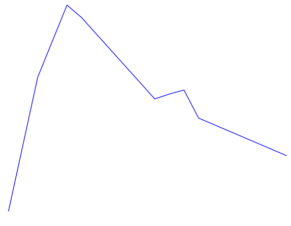 |
Figure 2 - Stimulus 1, filtered
This certainly looks more like an intonation pattern. Based on these graphs, and the stimulus, we can clearly categorize the intonation pattern as rising-falling, which is in line with what we would expect from a declarative sentence. There is a bit more work to be done in order for warble to reach to the same conclusion we have, but we will address that later. For now we will examine some more complicated examples. Figure 3 shows the Praat and warble data for stimulus 7 (“It’s raining, isn’t it?”). Figure 4 shows stimulus 8, which is the same tag question, but with an unsure tone.
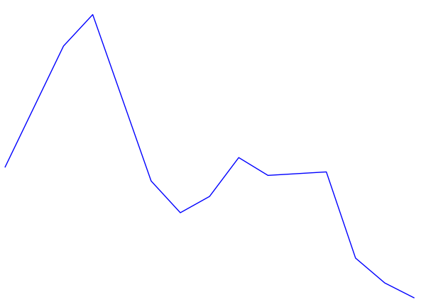 |
Figure 3 - Stimulus 7 - “It’s raining, isn’t it?
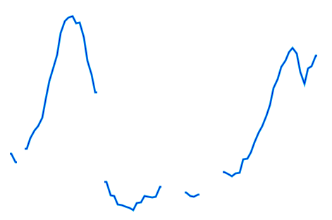 | 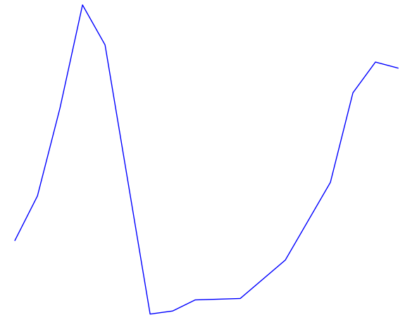 |
Figure 4 - Stimulus 8 - “It’s raining, isn’t it?” (unsure)
Both of these sentences have a rising-falling component for “It’s raining...”. The regular tag question has another rising-falling component for “isn’t it?”, and the unsure tag question just has a rising component. These things are obvious to a human observer, but can be unintuitive to put into formal logic (code) for a computer. For example, in the second rising-falling component in figure 3 the graph appears to dip down somewhat. We look at it and unconsciously filter it out, but how would we explain that thought process to someone? Perhaps we filter it because the low point is surrounded by a peak (averaging), perhaps because it only changes the pitch by a few Hertz (vertical filter), or perhaps because it only lasts for a few fractions of a second (horizontal filter). There are many possible ways to have a computer get that analysis, many of which could be combined to produce even better results, but I chose one that would be fairly simple to implement (vertical filter). First I assign every point on the graph a direction, based on its position relative to the point before it. If the point went down I assign it a -1, and if it went up it is assigned a 1 (the first point doesn’t get a value since there is nothing before it to compare to). After assigning these values, the data for stimulus 7 looks like this (cf. Fig. 3):
time | 0.32 | 0.41 | 0.46 | 0.55 | 0.60 | 0.65 | 0.69 | 0.74 | 0.83 | 0.88 | 0.92 | 0.97 |
pitch | 97.4 | 111.6 | 115.3 | 95.8 | 92.0 | 93.9 | 98.5 | 96.4 | 96.8 | 86.7 | 83.8 | 82.0 |
direc | 0 | 1 | 1 | -1 | -1 | 1 | 1 | -1 | 1 | -1 | -1 | -1 |
The next step is to combine all the points that are heading in the same direction and find the total change in pitch for each one. This is the data for stimulus 7 after this step
time | 0.41 | 0.55 | 0.65 | 0.74 | 0.83 | 0.88 |
Δpitch | 17.9 | 23.2 | 6.4 | 2.0 | 0.4 | 14.7 |
direction | 1 | -1 | 1 | -1 | 1 | -1 |
The last step is to filter out the points where the pitch didn’t change by more than some threshold (5 - 15 Hz threshold usually works well).
time | 0.41 | 0.55 | 0.65 | 0.88 |
Δpitch | 17.9 | 23.2 | 6.4 | 14.7 |
direction | 1 | -1 | 1 | -1 |
From the direction values that are left we get a fairly good idea of what the intonation pattern is, with 1 representing rising and -1 representing falling. The final value we get from warble for stimulus 7 is: rising-falling-rising-falling, which matches fairly well with the actual pattern. Figures 5 and 6 show the final generated graph that represents a best guess at the intonation pattern.
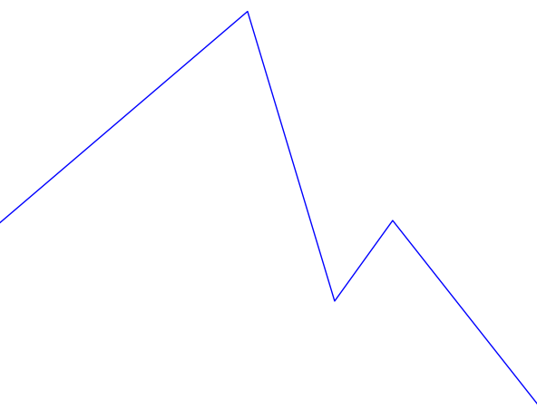 |
Figure 5 - Stimulus 7 - Intonation best guess
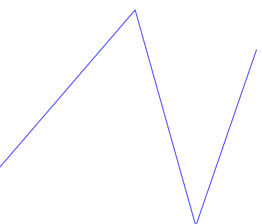 |
Figure 6 - Stimulus 8 - Intonation best guess
One of the difficulties of this system is that it relies heavily on parameters from the user. For instance, for many of the stimuli, using a filter threshold of 15 Hz works well, but for stimulus 7 and some others it actually produced less accurate results and a threshold of 5 Hz was better. Another parameter that can be adjusted is the sample size used in the pitch detection algorithm. The audio library that I used takes this parameter to determine the sample size used in the fast Fourier transform (FFT), which affects the number of data points you get back as well as the accuracy of those points. For this project I found that a sample size of 2048 bytes worked well, but given a different environment (microphone, acoustics of the room, recording software, or the subject’s voice), a different sample size would very likely be preferable. The third major parameter is the level of the initial frequency filter that I applied. For the male subject a filter of 170 Hz was used, but for a female subject this obviously would not be the same. So after examining the Praat data for the female subject (whose voice had a much higher degree of fluctuation), I decided to use a filter at 400 Hz. This would be something that more sophisticated software would be able to detect automatically. Figures 7 and 8 show the results of stimuli 7 and 8 for the female subject. It is interesting to note that from the initial warble graph as well as the final intonation pattern graph shown here it is actually easier to see the intonation pattern than from looking at the Praat graph. Praat is clearly more sophisticated in many ways, but there is something to be said for simple software that does one thing and does it well.
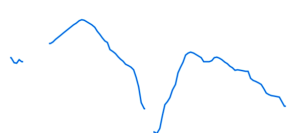 | 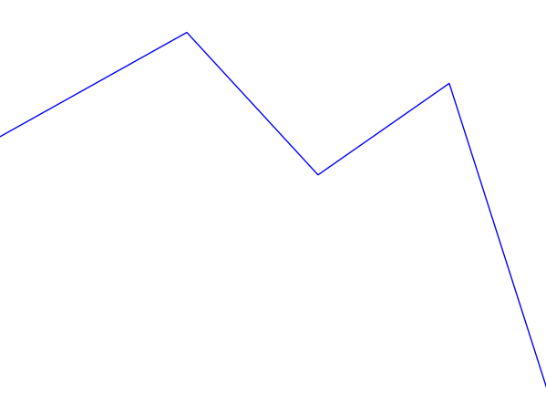 |
Figure 7 - Stimulus 7 - Subject 2 - “It’s raining, isn’t it?
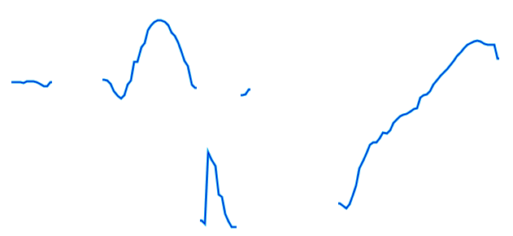 | 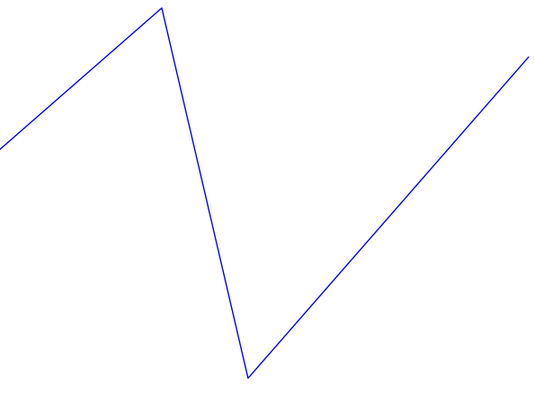 |
Figure 8 - Stimulus 8 - Subject 2 - “It’s raining, isn’t it?” (unsure)
There are, however, several examples of warble not performing very well. These usually seem to be the result of insufficient filtering, and could be improved by using a variety of filters instead of just the vertical filter. One of the most pronounced of these is shown in figure 9.
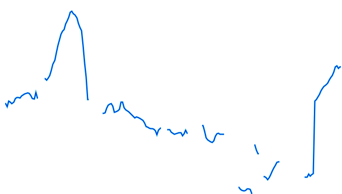 |
|
Figure 9 - Stimulus 20 - Subject 2 - “*Linguini isn’t a good source of vitamins!” (contradiction)
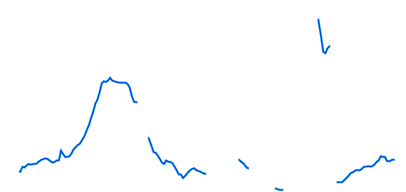 | 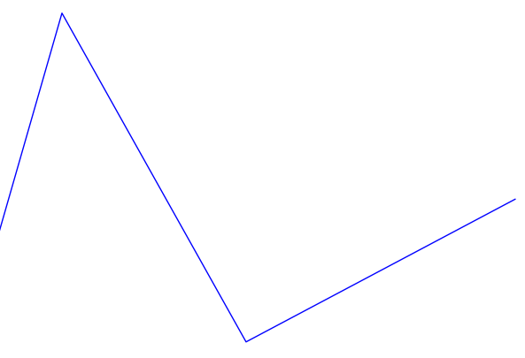 |
Figure 10 - Stimulus 20 - Subject 1
We can see that the warble approximation is on the right track; there is a definite falling-rising pattern, but there is still too much data to get a simple approximation like in figures 7 and 8. This is mostly caused by the fragmented nature of the available pitch data as seen in the Praat data in figure 9 and the spectrogram (Appx. B, Stimulus 20). Looking at the spectrogram reveals that the subject used a somewhat staccato speech pattern, which explains the data, but doesn’t make analyzing the pitch any easier. In comparison, the data in figure 10 (same stimulus, different subject) looks almost perfect. This is the tradeoff that comes with simple software; it isn’t able to compensate well for widely varying input data. Applying better filtering would improve the results, but it would likely be necessary to implement a smarter pattern detecting algorithm.
As noted in the previous discussion, there are many possibilities for improving warble. Better filtering is probably the most obvious of these, and it could include many things. The software could try to automatically determine what threshold to use in the pitch filtering; it could do some sort of filtering based on time, where pitches that last longer are weighted more than short pitches in the final approximation. Another type of filter that would be useful is a smoothing filter that takes the original pitch data and averages each data point against the surrounding points to get a more continuous pitch pattern. The software could also try to automatically determine the pitch limit for a given speaker, and try to choose the best sample rate by trying several.
These are all simple problems that can be fixed with a little bit of work. But there are deeper problems here that became obvious as I started working on this project, the most important being the ambiguity of intonation patterns. Even if it is fairly trivial to find the main intonation pattern in speech, how can we use that to determine the type of sentence? For example, if a rising-falling pattern is detected does that mean the phrase is a statement, wh-question, or tag question? If a rising pattern is detected does that indicate a yes-no question, echo question, or rising statement? Clearly some deeper analysis would be needed to actually determine the sentence type. Some of this could be accomplished by using a more precise annotation system, such as ToBI, but even that might not be enough.
While I was not able to accomplish my goal of categorizing sentence type for a recorded voice, I did make a lot of progress towards that end. I showed that simple software, such as warble, can be used to analyze speech in some meaningful way. I discovered many ways to improve the project, and discovered some of the limitations of this approach to speech processing.
A full listing of the source code written for this project can be found at: github.com/jcelliott/warble
Appendix A: Stimuli
note: * marks where the stress falls when relevant
Appendix B: Spectrograms
Stimulus 1:

Stimulus 7:

Stimulus 8:
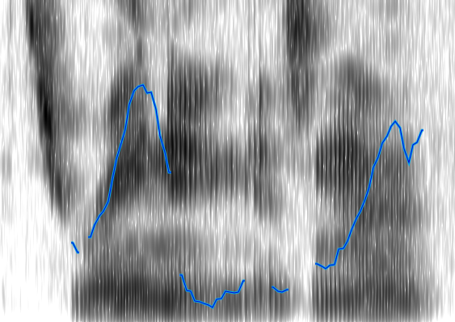
Stimulus 20 - Subject 2:
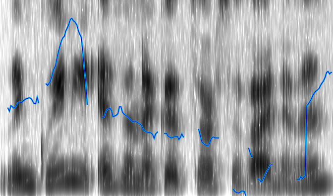